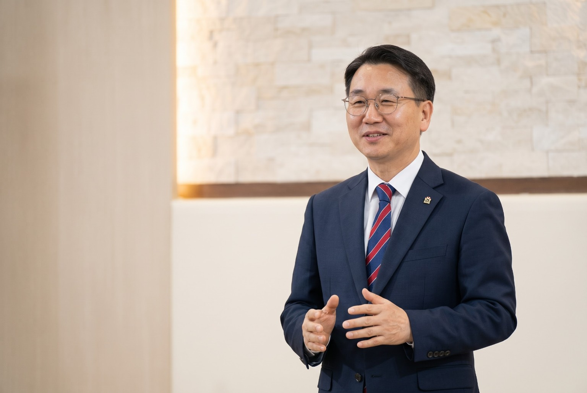

은혜의 예배
말씀과 찬양 가운데 하나님을 만나는 예배를 소중히 여깁니다.
새소망침례교회 홈페이지에 오신 여러분을 환영합니다.
예배와 말씀, 사랑의 교제를 통해 함께 성장하는 공동체를 꿈꿉니다.
※ 교회 소개와 사역 비전은 추후 실제 내용으로 교체할 예정입니다.
말씀과 찬양 가운데 하나님을 만나는 예배를 소중히 여깁니다.
서로를 환영하고 돌보며 함께 믿음의 길을 걸어갑니다.
우리 이웃에게 사랑과 소망을 전하는 공동체를 지향합니다.

* 예배 일정은 변경될 수 있으므로 방문 전 교회에 확인해 주세요.
처음 오시는 분들도 언제나 환영합니다.
2240 E 106th Street, Carmel, IN 46032
전화: 317-818-9191